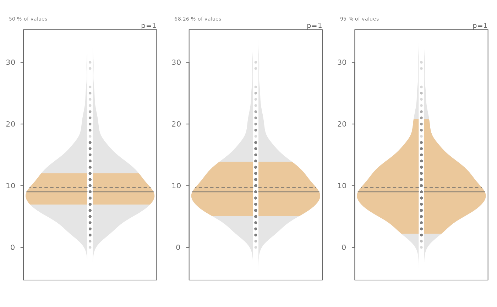
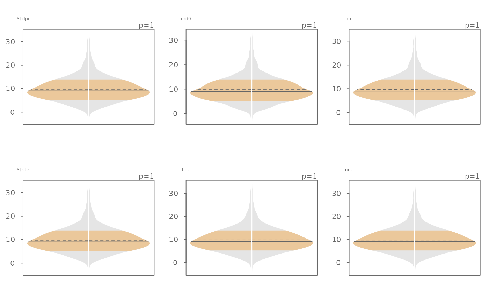

eda_viol generates a violin plot.
Usage
eda_viol(
dat,
x = NULL,
grp = NULL,
p = 1,
tukey = FALSE,
show.par = TRUE,
sq = FALSE,
inner = 0.6826,
bw = "SJ-dpi",
kernel = "gaussian",
stat = "both",
pch = 16,
size = 0.8,
alpha = 0.3,
p.col = "grey50",
p.fill = "grey80",
grey = 0.6,
col.ends = "grey90",
col.mid = "#EBC89B",
col.ends.dens = "grey90",
col.mid.dens = "#EBC89B",
offset = 0.02,
tsize = 1.5,
reorder = FALSE,
reorder.stat = median,
xlab = NULL,
ylab = NULL,
...
)Arguments
- dat
Single continuous variable vector, or a dataframe.
- x
Continuous variable if
datis a dataframe, ignored otherwise.- grp
Categorical Variable if
datis a dataframe, ignored otherwise.- p
Power transformation to apply to all values.
- tukey
Boolean determining if a Tukey transformation should be adopted (
TRUE) or if a Box-Cox transformation should be adopted (FALSE).- show.par
Boolean determining if the power transformation used with the data should be displayed in the plot's upper-right corner.
- sq
Boolean determining if the plot should be square.
- inner
Fraction of values that should be captured by the inner color band of the normal and density plots. Defaults to 0.6826 (inner 68\ values).
- bw
Bandwidth parameter passed to the
density()function.- kernel
Kernel parameter passed to the
density()function.- stat
Statistical summary to display in the plot. Choice of "median", "mean", "both" or "none". Defaults to both.
- pch
Point symbol type.
- size
Point size.
- alpha
Fill transparency (0 = transparent, 1 = opaque). Only applicable if
rgb()is not used to define fill colors.- p.col
Color for point symbol.
- p.fill
Point fill color passed to
bg(Only used forpchranging from 21-25).- grey
Grey level to apply to plot elements such as axes, labels, etc... (0 to 1 with 1 = black).
- col.ends
Fill color for tail-ends of the distribution.
- col.mid
Fill color for mid-portion of the distribution.
- col.ends.dens
Fill color for tail-ends of the density distribution.
- col.mid.dens
Fill color for mid-portion of the density distribution.
- offset
A value (in x-axis units) that defines the gap between left and right side plots. Ignored if
densisFALSE.- tsize
Size of plot title.
- reorder
Boolean determining if factors have to be reordered based on
reoder.stat.- reorder.stat
Choice of summary statistic to use for reordering plots.
reorder.statcan be eithermeanormedian.- xlab
X variable label.
- ylab
Y variable label.
- ...
Note used.
Details
This function will generate a violin plot from the data. It
implements the stats::density function when generating the shape of the
plots. As such the bw and kernel arguments are passed on to
the stats::density function.
The plots have two fill colors: one for the inner band and the other for
the outer band. The inner band shows the area of the curve that encompasses
the desired fraction of mid-values defined by inner. By default, this
value is 0.6826, or 68.26\
covered by +/- 1 standard deviations of a Normal distribution). The range
is computed from the actual values and not from a fitted normal
distribution.
Measures of centrality are added to the plot. By default, both the mean
(dashed line) and the median (solid line) are added to the plot.
Examples
# Explore a skewed distribution
set.seed(132)
x <- rnbinom(500, 10, .5)
# Generate violin plot
eda_viol(x)
# The inner band's range can be modified. Here, we view the interquartile
# range, the +/- 1 standard deviation range and the inner 95% range)
OP <- par(mfrow = c(1,3))
invisible(sapply(c(0.5, 0.6826, 0.95),
function(prop) eda_viol(x, inner = prop, tsize = 1,
ylab = paste(prop*100,"% of values"))))

par(OP)
# The bandwidth selector can also be specified
OP <- par(mfrow=c(2,3))
invisible(sapply(c("SJ-dpi", "nrd0", "nrd", "SJ-ste", "bcv", "ucv" ),
function(band) eda_viol(x, bw = band, tsize=0.9, size=0, offset=0.005,
ylab = band)))

par(OP)
# The bandwidth argument can also be passed a numeric value
# (bw = 0.75, 0.5 and 0.3)
OP <- par(mfrow=c(1,3))
invisible(sapply(c(0.75, 0.5, 0.3 ),
function(band) eda_viol(x, bw = band, tsize=1,size=.5, offset=0.01,
ylab = band)))
par(OP)
# Examples of a few kernel options
OP <- par(mfrow=c(1,3))
invisible(sapply(c("gaussian", "optcosine", "rectangular" ),
function(k) eda_viol(x, kernel = k, tsize=1, size=.5, offset=0.01,
ylab = k)))
par(OP)
# Another example where data are passed as a dataframe
set.seed(540)
dat <- data.frame(value = rbeta(20, 1, 50),
grp = sample(letters[1:3], 100, replace = TRUE))
eda_viol(dat, value, grp)
# Points can be removed and the gap rendered narrower
eda_viol(dat, value, grp, size = 0, offset = 0.01)
# Gap can be removed all together
eda_viol(dat, value, grp, size = 0, offset = 0)
# Remove both mean and medians
eda_viol(dat, value, grp, size = 0, offset = 0, stat = "none")
 # Color can be modified. Here we modify the density plot fill colors
eda_viol(dat, value, grp, size = 0, offset = 0.01,
col.ends.dens = "#A1D99B", col.mid.dens = "#E5F5E0")
# A power transformation can be applied to the data. Here
# we'll apply a log transformation
eda_viol(dat, value, grp, p = 0)
# Color can be modified. Here we modify the density plot fill colors
eda_viol(dat, value, grp, size = 0, offset = 0.01,
col.ends.dens = "#A1D99B", col.mid.dens = "#E5F5E0")
# A power transformation can be applied to the data. Here
# we'll apply a log transformation
eda_viol(dat, value, grp, p = 0)